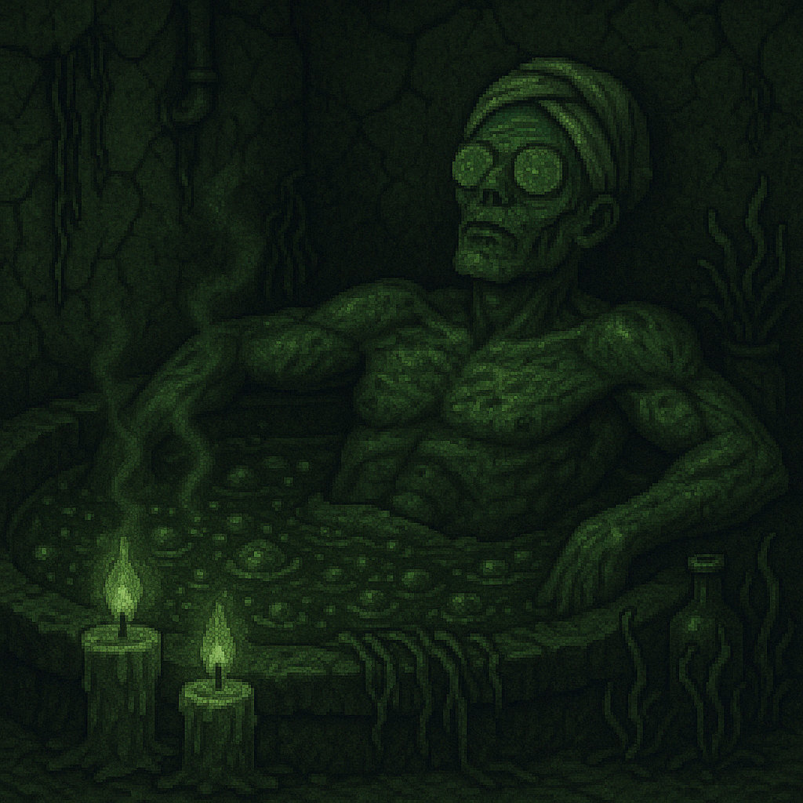

¿Cansado después de entrenar sin descanso? Tómate un respiro en nuestro SPA zombie, donde podrás disfrutar de los mejores baños putrefactos, relajarte en nuestras saunas y reponerte tras un duro día de fortalecimiento.

Descanso del Zombie
Baños humeantes solo aptos para los más fuertes.
Masajes óseos (solos o en pareja).
Zona de reposición de sales con zumos de materia gris.